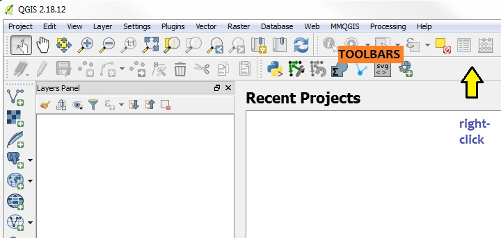
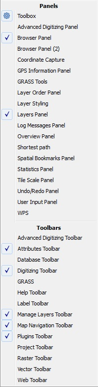
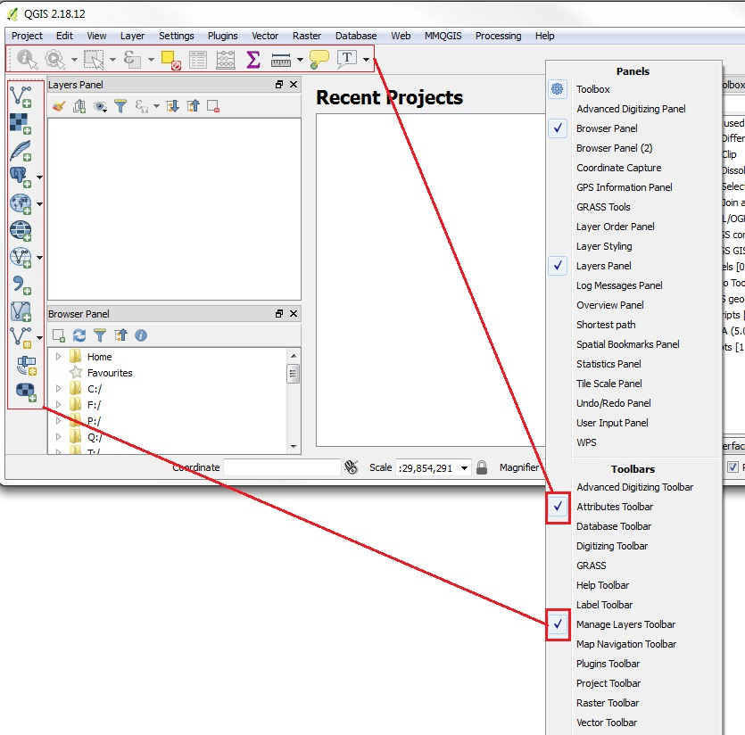
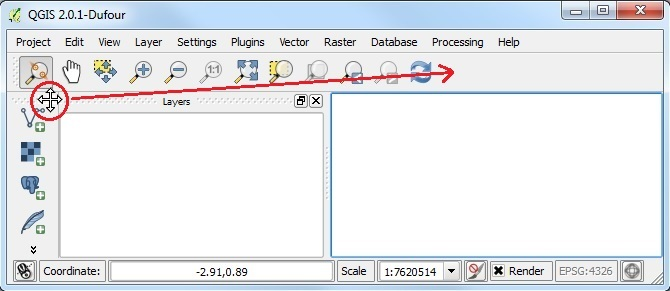
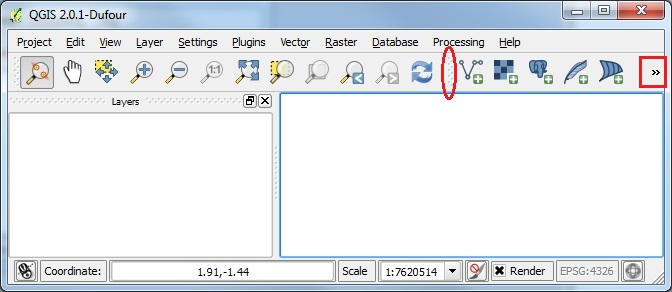
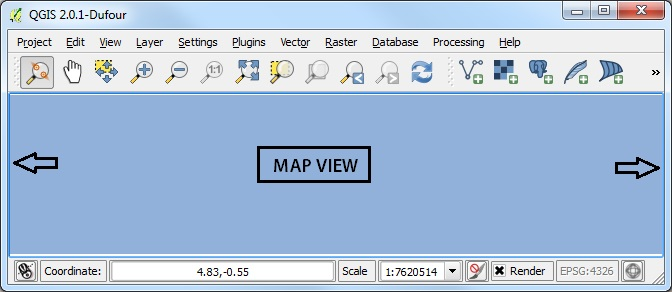
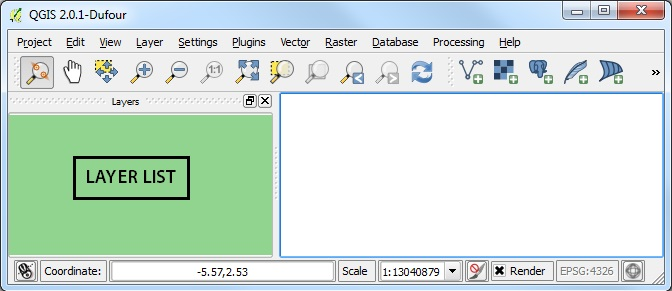

Working with TOOLBARS
Right-click on empty gray part of TOOLBAR area

you will see a list of PANELS and TOOLBARS

uncheck all the TOOLBARS except MANAGE LAYERS and ATTRIBUTES (note you will have to right-click each time you want to Enable or Disable a PANEL or a TOOLBAR). Now you will have only two TOOLBARS active

You can move each TOOLBAR around on the TOOLBARS AREA. Click on the TOOLBAR handle (gray dots on left or top edge of a toolset) to enable MOVE control. Drag the TOOLBAR handle to any open space on TOOLBAR AREA and let go.

Now the user interface will be reset. Notice that the number of items visible within a particular TOOLBAR depends on the available screen-size. Click on the double-angle bracket symbol at the right or bottom of any toolset to see the complete list of tools available for any toolbar.

Now right click on the TOOLBAR area and uncheck the PANELS called TOOLBOX, BROWSER, and LAYERS. You will see the MAP AREA expand to the width of the window, when these PANELS are disabled.

Right click on the TOOLBAR area and check the LAYERS PANEL to turn it back on

You can now activate or deactivate any of the TOOLBARS and PANELS that you want to use. You can also reposition them in the TOOLBAR AREA. In addition to right-clicking on the TOOLBAR area, you can access the same functions from the top Menu: VIEW | TOOLBARS
Proceed to the section on ADD DATA, PAN, ZOOM, IDENTIFY Instructions